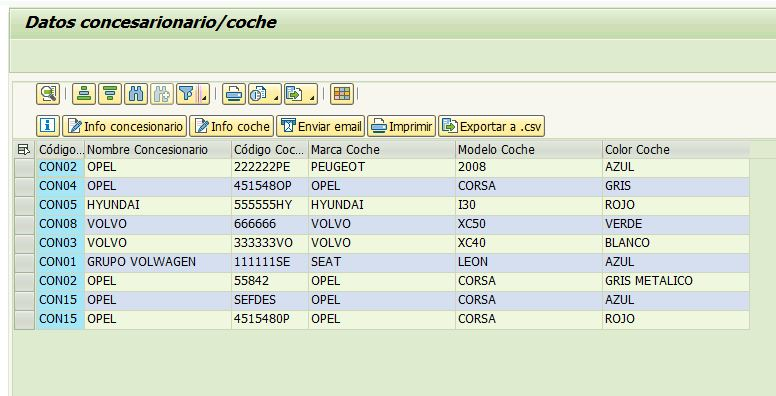

<div id="ajax-page" class="ajax-page-content">
    <div class="ajax-page-wrapper">
        <div class="ajax-page-nav">
            <div class="nav-item ajax-page-prev-next">
                <a class="ajax-page-load" href="portfolio-1.html"><i class="lnr lnr-chevron-left"></i></a>
                <a class="ajax-page-load" href="portfolio-4.html"><i class="lnr lnr-chevron-right"></i></a>
            </div>
            <div class="nav-item ajax-page-close-button">
                <a id="ajax-page-close-button" href="index.html#about-me"><i class="lnr lnr-cross"></i></a>
            </div>
        </div>

        <div class="ajax-page-title">
            <h1>Proyecto SAP ABAP</h1>
        </div>

        <div class="row">
            <div class="col-sm-7 col-md-7 portfolio-block">
                <div class="owl-carousel portfolio-page-carousel">
                    <div class="item">
                        
                    </div>
                    <div class="item">
                        
                    </div>
                    <div class="item">
                        
                    </div>
                </div>

                <!--
                <div class="portfolio-page-image">
                    
                </div>
                -->

                <script type="text/javascript">
                    jQuery(document).ready(function($){

                        $('.portfolio-page-carousel').owlCarousel({
                            smartSpeed:1200,
                            items: 1,
                            loop: true,
                            dots: true,
                            nav: true,
                            navText: false,
                            margin: 10
                        });

                    });
                </script>
            </div>

            <div class="col-sm-5 col-md-5 portfolio-block">
                <!-- Project Description -->
                <div class="project-description">
                    <div class="block-title">
                        <h3>Descripción</h3>
                    </div>
                    <ul class="project-general-info">
                        <li><p><i class="fa fa-user"></i> Laura Trillo</p></li>
                        <li><p><i class="fa fa-globe"></i> <a href="#" target="_blank">https://github.com/Laura-tb/SAP-ABAP-GUI</a></p></li>
                        <li><p><i class="fa fa-calendar"></i> Agosto 2025</p></li>
                    </ul>

                    <p class="text-justify">Gestor de concesionarios y coches desarrollado en ABAP con interfaz GUI utilizando programación orientada a objetos, ALV, botones con funcionalidades de popup, envío de información por email, expotación de datos de ALV a .csv y creación de Logs.</p>
                    <!-- /Project Description -->

                    <!-- Technology -->
                    <div class="tags-block">
                        <div class="block-title">
                            <h3>Tecnologías</h3>
                        </div>
                        <ul class="tags">
                            <li><a>ABAP</a></li>
                            <li><a>Interfaz GUI</a></li>
                            <li><a>ALV</a></li>
                            <li><a>Dynpro</a></li>
                            <li><a>Smartforms</a></li>
                            <li><a>POO</a></li>                
                        </ul>
                    </div>
                    <!-- /Technology -->
                </div>
                <!-- Project Description -->
            </div>
        </div>
    </div>
</div>
